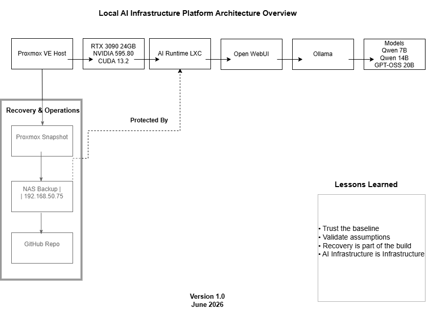

The project combined infrastructure operations, GPU platform validation, Linux administration, AI runtime integration, documentation, and recovery planning. The success criterion was not a working demo. The success criterion was a trustworthy platform state.
Engineering Case Study - AI Infrastructure
Building a Local AI Infrastructure Platform
This was not simply an AI installation project. It was an infrastructure engineering effort involving architecture decisions, operational troubleshooting, platform validation, recovery planning, and the creation of a repeatable AI infrastructure baseline.
Validated Stack
Operational
- VirtualizationProxmox
- GPURTX 3090
- DriverNVIDIA 595.80
- RuntimeCUDA 13.2
- ContainerLXC
- InterfaceOpen WebUI
- ServingOllama
- Validated ModelGPT-OSS 20B
Operating Objective
Build a controlled local AI platform that could be validated, recovered, documented, and extended.
The rebuilt environment successfully hosted and executed Qwen 7B, Qwen 14B, and GPT-OSS 20B with GPU acceleration, then established a recoverable baseline through snapshots, NAS backups, and GitHub documentation.
Architecture Overview
The platform separates infrastructure, GPU enablement, runtime services, application access, and model validation into clear operating layers.
Future Draw.io Diagram
Physical topology, GPU path, container boundary, runtime services, recovery flow

Validated Logical Flow
- Proxmox
- RTX 3090
- NVIDIA 595.80
- CUDA 13.2
- LXC Container
- Open WebUI
- Ollama
- Qwen Models
- GPT-OSS 20B
Future Draw.io Diagram
Runtime request path and model validation sequence
Engineering Timeline
The build progressed from initial deployment through driver investigation, rebuild, validation, recovery, and portfolio integration.
- 01Initial AI Platform Deployment
- 02GPU Validation Challenges
- 03VFIO Investigation
- 04Ollama Runtime Failures
- 05Platform State Confidence Review
- 06Decision To Rebuild
- 07Fresh Proxmox Deployment
- 08NovaCore Conflict Discovery
- 09NVIDIA 595.80 Installation
- 10CUDA 13.2 Validation
- 11Open WebUI Validation
- 12Ollama Validation
- 13Qwen Model Validation
- 14GPT-OSS 20B Validation
- 15Snapshot Creation
- 16NAS Backup Creation
- 17GitHub Documentation
- 18Portfolio Integration
Key Decisions
The project hinged on engineering judgment: when to keep troubleshooting, when to challenge assumptions, and when to protect the validated state.
Continue troubleshooting versus rebuild from a trusted baseline
Outcome: Fresh rebuild selected.
Reason: Confidence in platform state had become too low.
Assume AI runtime issue versus validate GPU ownership
Outcome: NovaCore conflict identified.
Reason: Root cause analysis revealed a driver ownership conflict.
Move on after validation versus establish recovery strategy
Outcome: Snapshot and NAS backup created.
Reason: A stable platform is only valuable if it can be recovered.
Root Cause Analysis
The investigation treated runtime failures as symptoms of a deeper platform state and GPU ownership problem.
VFIO Investigation
GPU behavior was reviewed at the host and passthrough layers to determine whether the device was being held by the wrong subsystem.
GPU Ownership Analysis
The RTX 3090 needed a clear ownership path before CUDA and model execution could be trusted.
NovaCore Conflict Discovery
A conflicting driver stack involving NovaCore was identified as a blocker for clean NVIDIA driver attachment.
Driver Attachment Issues
NVIDIA installation failures and inconsistent module behavior were traced back to the underlying ownership conflict.
Platform State Drift
Accumulated troubleshooting changes reduced confidence in the environment, making a clean rebuild the stronger engineering path.
Key Outcomes Dashboard
The final platform state was validated across compute, driver, runtime, application, models, and recovery controls.
Benchmarking & Observability
The project moved beyond running a local model into measuring runtime behavior under load.
The next phase of the lab added vLLM serving, Prometheus metrics, Grafana dashboards, and Locust load testing so the platform could be judged by throughput, latency, queue depth, and GPU behavior rather than a single successful response.
Benchmark results were captured using Locust, Prometheus, Grafana, and NVIDIA GPU telemetry while serving Qwen 2.5 7B through vLLM on an EVGA RTX 3090 FTW3 Ultra.
| Test | Users | Generation Tokens/sec | Prompt Tokens/sec | Avg Latency | P95 Latency | Waiting Requests | Failures |
|---|---|---|---|---|---|---|---|
| Baseline | 1 | ~33.07 | ~6.58 | ~4.18s | ~4.20-4.88s | 0 | 0 |
| Concurrency Test | 5 | ~159.31 | ~29.6 | ~4.22s | ~4.30-4.88s | 0 | 0 |
| Load Test | 25 | ~751.76 | ~141 | ~4.54s | ~4.60-4.88s | 0 | 0 |
| Sustained Load Test | 50 | ~1439.93 | ~262 | ~4.76-4.92s | ~4.89-5.0s | 0 | 0 |
Understanding the Dashboard
Three layers: observability health, runtime behavior, and saturation signals.
The dashboard is meant to show whether the monitoring box is healthy, how the AI runtime is behaving, and whether requests are starting to queue.
CT203 CPU Usage %
Shows whether Prometheus, Grafana, Node Exporter, and Locust are using enough CPU to become part of the benchmark problem.
CT203 Memory Usage %
Shows whether the observability and load-testing container has enough RAM headroom during benchmark runs.
CT203 Disk Usage %
Tracks local disk pressure on the observability server, which matters because Prometheus stores time-series data locally.
Generation Tokens/sec
Measures output throughput: how many response tokens Qwen 2.5 7B generates per second.
Prompt Tokens/sec
Measures input throughput: how many prompt tokens are processed before responses are generated.
Requests Running
Shows active inference requests currently being processed by vLLM. It is the current concurrency view.
Requests Waiting
Shows queued requests waiting for GPU/runtime resources. Zero means requests are not backing up.
Average Request Latency
Shows average request completion time. It is one of the main user-facing performance metrics.
P95 Request Latency
Shows the response time experienced by 95% of requests, which helps expose slow outliers.
KV Cache Usage %
Shows how much of the runtime's short-term memory workspace is being used. 0-30% is plenty of headroom, 30-70% is normal, 70-90% needs attention, and 90%+ can become bottleneck territory.
GPU Validation
RTX 3090 Runtime Validation
During the 50-user benchmark, the EVGA RTX 3090 FTW3 Ultra reached 100% utilization and 249W power draw while staying around 56 degrees C. VRAM usage was approximately 21.9GB out of 24GB. There were zero failed requests and zero queued requests.
Initial baseline validation showing approximately 33 generation tokens/sec, stable latency, and zero failures.
Sustained load test showing approximately 1440 generation tokens/sec, 100% GPU utilization, 249W power draw, and zero queued requests.
Implementation Notes
Dashboard v1.1 added host separation and custom GPU telemetry.
These notes document what was actually configured: the vLLM runtime command, Prometheus scrape targets, Node Exporter textfile collection, the GPU metrics script, and the systemd timer that keeps the dashboard current.
vLLM startup command
CT202 serves Qwen/Qwen2.5-7B-Instruct through vLLM on port 8000.
source ~/vllm-env/bin/activate
vllm serve Qwen/Qwen2.5-7B-Instruct \
--host 0.0.0.0 \
--port 8000 \
--tensor-parallel-size 1 \
--gpu-memory-utilization 0.90 \
--max-model-len 8192Prometheus scrape jobs
CT203 runs Prometheus and Grafana. Prometheus scrapes the vLLM metrics endpoint and the CT202 Node Exporter endpoint.
vLLM scrape target:
192.168.50.104:8000
CT202 node exporter scrape target:
192.168.50.104:9100Textfile collector
CT202 exposes custom GPU metrics by enabling the Node Exporter textfile collector.
/etc/default/prometheus-node-exporter
ARGS="--collector.textfile.directory=/var/lib/node_exporter/textfile_collector"Custom exporter script
The gpu-metrics.sh script uses nvidia-smi and writes gpu.prom for Node Exporter. It collects utilization, temperature, power draw, and VRAM usage.
#!/usr/bin/env bash
set -euo pipefail
OUT="/var/lib/node_exporter/textfile_collector/gpu.prom"
TMP="${OUT}.$$"
read -r GPU_UTIL GPU_TEMP GPU_POWER GPU_MEM_USED < <(
nvidia-smi --query-gpu=utilization.gpu,temperature.gpu,power.draw,memory.used \
--format=csv,noheader,nounits | head -n 1 | tr -d ','
)
cat > "$TMP" <<EOF
# HELP gpu_utilization_percent GPU utilization percentage from nvidia-smi.
# TYPE gpu_utilization_percent gauge
gpu_utilization_percent $GPU_UTIL
# HELP gpu_temperature_celsius GPU temperature in Celsius from nvidia-smi.
# TYPE gpu_temperature_celsius gauge
gpu_temperature_celsius $GPU_TEMP
# HELP gpu_power_watts GPU power draw in watts from nvidia-smi.
# TYPE gpu_power_watts gauge
gpu_power_watts $GPU_POWER
# HELP gpu_memory_used_mb GPU memory used in MB from nvidia-smi.
# TYPE gpu_memory_used_mb gauge
gpu_memory_used_mb $GPU_MEM_USED
EOF
mv "$TMP" "$OUT"systemd service and timer
gpu-metrics.service runs the exporter, and gpu-metrics.timer runs it every 15 seconds so Grafana has a current GPU view without Prometheus shelling out to nvidia-smi.
# gpu-metrics.service
[Unit]
Description=Collect NVIDIA GPU metrics for Node Exporter
[Service]
Type=oneshot
ExecStart=/usr/local/bin/gpu-metrics.sh
# gpu-metrics.timer
[Unit]
Description=Run GPU metrics collection every 15 seconds
[Timer]
OnBootSec=15s
OnUnitActiveSec=15s
Unit=gpu-metrics.service
[Install]
WantedBy=timers.targetSeparated host and GPU views
The dashboard now separates CT203 observability host metrics from CT202 AI runtime host metrics. GPU panels include utilization, temperature, power draw, and VRAM usage.
With Qwen 2.5 7B loaded and idle/ready, the RTX 3090 showed about 21,996 MB of VRAM used.
Matt's Notes
What the benchmarks changed
I expected the 25-user test to show the beginning of saturation. It did not. The 50-user test pushed the GPU to 100%, but the platform still showed no queued requests and no failures.
The biggest surprise was the temperature. Seeing the RTX 3090 hold around 56 degrees C under sustained inference load gave me a lot more confidence in both the card and the platform design.
Primary Lesson
"Trusting a clean baseline can be more valuable than endlessly troubleshooting an unknown environment."
Symptoms are not always root causes.
Ollama failures and slow model responses pointed toward runtime issues, but the deeper issue was GPU ownership.
Documentation accelerates troubleshooting.
Notes, screenshots, configuration details, and validation results reduced repeated work and improved decision quality.
Recovery planning should be part of the build process.
Snapshots and NAS backups converted a working state into a recoverable platform baseline.
AI Infrastructure is still Infrastructure.
Architecture, reliability, security, monitoring, recovery, and documentation remain core operating concerns.
Business Value
The project demonstrates enterprise-relevant infrastructure capability across operations, platform engineering, AI infrastructure, and recovery discipline.
Infrastructure Operations
Validated host state, service behavior, backup posture, and operational reliability.
GPU Infrastructure
Managed driver installation, CUDA validation, GPU visibility, and workload execution.
Linux Administration
Worked through host-level behavior, kernel-level ownership, runtime services, and containerized execution.
Platform Engineering
Created a repeatable baseline with documented decisions, validation steps, and recovery controls.
AI Infrastructure
Integrated Open WebUI, Ollama, local model execution, and future-ready platform patterns.
Disaster Recovery
Established snapshot and NAS backup strategy immediately after successful validation.
Documentation and Repeatability
Converted troubleshooting and implementation work into artifacts that support future rebuilds.
Operational Decision Making
Selected rebuild over continued troubleshooting when confidence in platform state became too low.
Future Roadmap
Future initiatives extend the validated baseline into broader AI platform engineering capabilities.
- llama.cpp
- vLLM
- Vector Database Platform
- RAG Knowledge Platform
- Secret Management
- AI Operations Agent
- AI Platform Engineering Lab